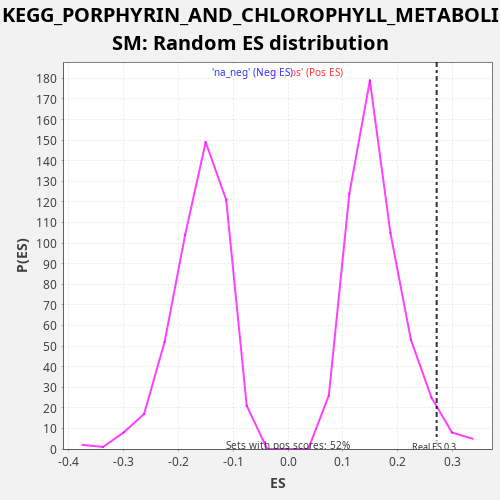

Profile of the Running ES Score & Positions of GeneSet Members on the Rank Ordered List
The same image in compressed SVG format
| Dataset | LabCL |
| Phenotype | NoPhenotypeAvailable |
| Upregulated in class | na_pos |
| GeneSet | KEGG_PORPHYRIN_AND_CHLOROPHYLL_METABOLISM |
| Enrichment Score (ES) | 0.27079996 |
| Normalized Enrichment Score (NES) | 1.6836967 |
| Nominal p-value | 0.032380953 |
| FDR q-value | 0.16480914 |
| FWER p-Value | 0.915 |
| SYMBOL | RANK IN GENE LIST | RANK METRIC SCORE | RUNNING ES | CORE ENRICHMENT | |
|---|---|---|---|---|---|
| 1 | FTH1 | 12 | 621.631 | 0.0365 | Yes |
| 2 | HCCS | 652 | 21.960 | 0.0472 | Yes |
| 3 | CPOX | 1008 | 11.879 | 0.0696 | Yes |
| 4 | UGT1A9 | 1079 | 10.735 | 0.1037 | Yes |
| 5 | MMAB | 1125 | 10.004 | 0.1389 | Yes |
| 6 | COX10 | 1512 | 5.777 | 0.1600 | Yes |
| 7 | CP | 2119 | 2.715 | 0.1720 | Yes |
| 8 | FECH | 2869 | 1.325 | 0.1781 | Yes |
| 9 | HMOX1 | 3139 | 1.068 | 0.2040 | Yes |
| 10 | HMOX2 | 4433 | 0.420 | 0.1877 | Yes |
| 11 | UGT1A10 | 4595 | 0.377 | 0.2181 | Yes |
| 12 | ALAS1 | 5105 | 0.263 | 0.2341 | Yes |
| 13 | BLVRA | 5869 | 0.156 | 0.2396 | Yes |
| 14 | BLVRB | 6012 | 0.140 | 0.2708 | Yes |
| 15 | EARS2 | 9840 | 0.002 | 0.1498 | No |
| 16 | UROD | 10456 | 0.000 | 0.1614 | No |
| 17 | UGT1A7 | 11100 | -0.000 | 0.1719 | No |
| 18 | GUSB | 11177 | -0.000 | 0.2058 | No |
| 19 | COX15 | 13003 | -0.011 | 0.1675 | No |
| 20 | PPOX | 14008 | -0.029 | 0.1631 | No |
| 21 | UROS | 19874 | -0.812 | -0.0421 | No |
| 22 | ALAD | 19989 | -0.859 | -0.0097 | No |
| 23 | UGT1A1 | 20031 | -0.878 | 0.0256 | No |
| 24 | UGT2B7 | 20672 | -1.237 | 0.0362 | No |
| 25 | UGT1A6 | 21104 | -1.639 | 0.0555 | No |
| 26 | HMBS | 21951 | -3.047 | 0.0576 | No |
| 27 | UGT1A4 | 22415 | -4.835 | 0.0755 | No |

{kind=link}
{kind=link}